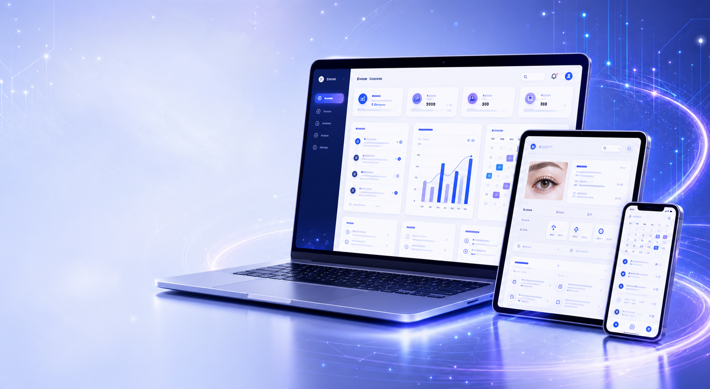

Lucia サロン運営サポートシステム
現場の声から生まれた、アイリストのための総合管理システム。Lucia のサロン運営ノウハウを基盤に開発され、予約から売上分析まで日々の業務を一つにまとめます。

Eyelash Salon Lucia のサロン運営ノウハウをもとに開発されたシステムとして、公式 Lark Japan 主催の招待制イベント「Lark Master」にて発表されました。
MAIN FEATURES
予約・変更・キャンセルを一元管理。ダブルブッキングも防止します。
お客様の情報・施術履歴を安全に管理し、リピートにつなげます。
電子同意書でペーパーレス化。署名・保管をオンラインで完結。
施術履歴・デザイン・写真を一元管理。次回提案も簡単に。
売上・入金・メニュー別集計を自動化。日次・月次の確認がシンプルに。
予約状況・顧客動向をグラフで可視化。データに基づく運営をサポート。
スタッフ間で情報・タスクを共有。チーム全体の連携と生産性を向上。
BENEFITS
日々の管理業務を自動化し、施術やお客様対応に集中できる環境をつくります。
履歴やデザインを把握して丁寧な接客。リピート率と信頼を高めます。
データに基づく改善で、売上アップと安定経営を実現します。